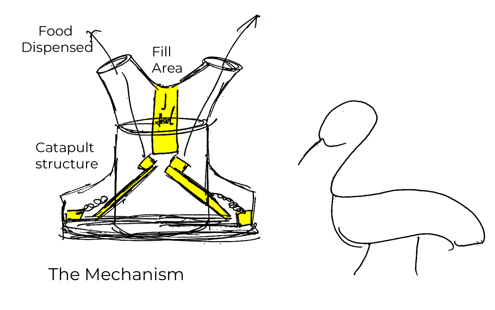
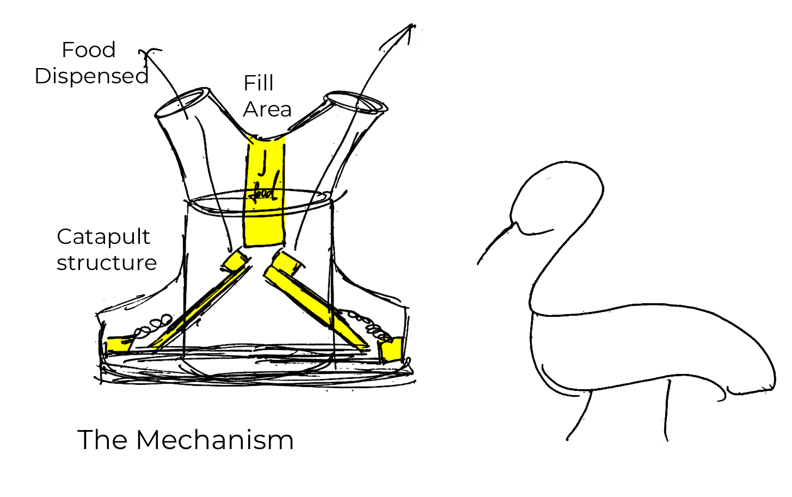
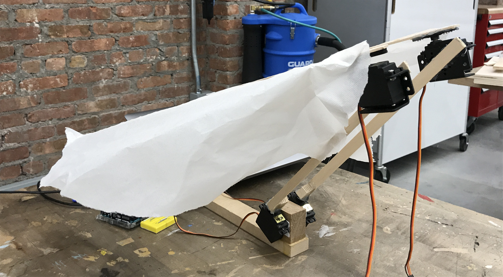
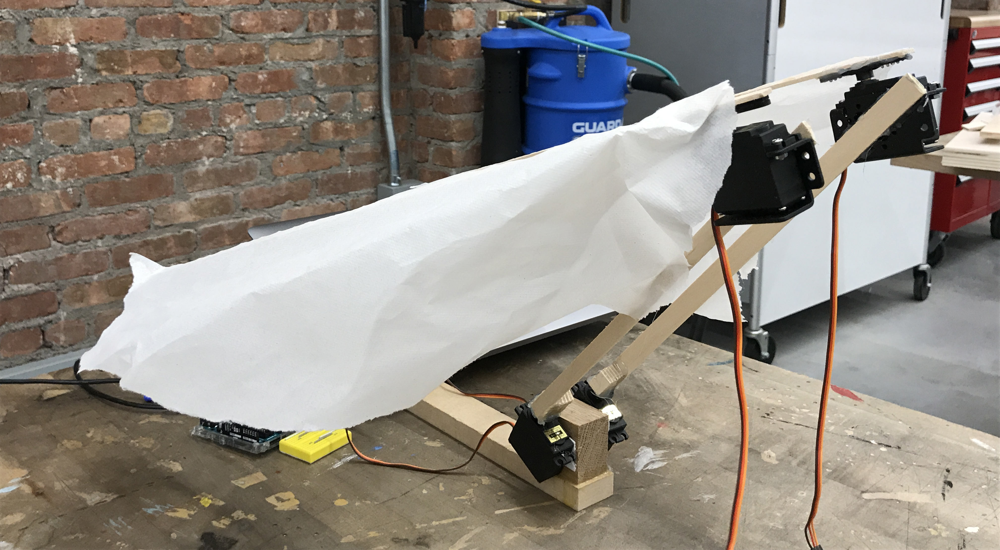

k // a
KAREN EL ASMAR
Week 8 & Week 9
Assignment Brief - Midterm:
Following brainstorming and ideation, make a functional prototype. Consider animal/animal behavior designing for, senses engaged of this animal, form of device, relation of form/affordance to the animal behavior, placement of device, outcome of using the device, interactions (play, food, social etc.) encouraged for animal and ways to validate all this (e.g: tested in field, use of a prior enrichment outcome framework).
Team of 3
The idea we chose to move forward with are both, the Traffic “Feeder” System and the Traffic “Wing” System.
We formed a scenario in a near future where wild animals will start to exist more frequently in cities and in urban environments. For this, we imagine that in the future, there would be infrastructural systems not only for human benefits but also for nonhuman users of the city like animals and possibly robots. For this project, we decided to create an infrastructural system for geese specifically as our users, however, we believe that such a system or device could easily be applied to other animals as well, like other types of birds or even squirrels.
Guiding Questions:
- What would a “zebra crossing system” be when designing with geese as our users?
- How can we attract the attention of geese in the most natural way to their behavior?
- How can we attract vs repel geese?
- How do geese actually perceive food, is it by sight, by smell or by touch?
- What functions would trigger the responses we’re seeking from geese? (come closer vs flee) / how do geese trigger such responses in their own flocks?
Placement
While researching, we found out that geese prefer to spend most of their time in the sun rather in the shade.
For this, to place our design on site, we did a sun analysis for the location we chose to figure out the best spot throughout the year that the sun hits the most.

Form
The form and function we chose are inspired from traffic light system for humans and the presence of a zebra brush for pedestrians.
Comparison:
Unlike humans, geese do not plan where to go and need a different type of guidance when crossing a street. For this, we decided to build our design on tracks so that the device itself would follow the geese rather the geese following it. (Reverse thinking to how humans would go towards a zebra crossing) Whenever a geese is on the street, the device would trigger a certain function, device 1 would throw out food while device 2 would raise its wings, which is a territorial behavior that geese portray to let other geese know that they should not come close.

Function
Device 1:
 

Device 2:

 

Final Midterm Presentation:
Link to Presentation